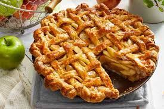

Apple Pie

Old-Fashioned Apple Pie
This double-crust apple pie is the perfect way to welcome fall!
While apple pies can be made in a variety of ways—crumble-topped, made in a skillet or slab, topped with cinnamon rolls, baked into a chess pie, doused with caramel, fried, or even topped with cheese—an old-fashioned apple pie is a straightforward classic that never goes out of style. Characterized by a double crust and lightly spiced filling, this comforting pie is an American staple, made by families for generations.
Ingredients
Crust:
- 2 cups all-purpose flour, plus more for work surfaces
- 1 cup cold unsalted butter, cut into small pieces
- 1 tsp. kosher salt
Filling:
- 9 to 10 Granny Smith apples, peeled and thinly sliced
- 1/2 cup granulated sugar
- 1/4 cup all-purpose flour
- 1 tsp. ground cinnamon
- Dash of kosher salt
- 2 Tbsp. unsalted butter, cut into small pieces
Directions
- Prepare the Crust:
Using your fingers, mix together flour, butter, and salt in a large bowl until butter is well incorporated. Gradually sprinkle 2 to 4 tablespoons very cold water into mixture, kneading as you add water, until dough just comes together. (You may not need to add water.) Turn dough out onto a lightly floured work surface; knead until it forms a smooth ball, 2 to 3 times. Divide dough in half, and shape into 2 disks. Wrap each disk in plastic wrap; chill for at least 2 hours.
- Add dough to pie dish:
Unwrap 1 chilled dough disk, and place on a lightly floured work surface. Let stand at room temperature until slightly softened, about 5 minutes. Sprinkle with flour; roll into a 12-inch circle. Carefully fit dough round into a 9-inch deep-dish glass pie plate, leaving a 1 ½-inch overhang around edges. Refrigerate until ready to use.
- Prepare the Filling:
Preheat oven to 425°F with oven rack in lowest position. Stir together apples, sugar, flour, cinnamon, and salt in a large bowl until apples are evenly coated. Spoon mixture into prepared piecrust; sprinkle mixture with butter.
- Make lattice topping:
Unwrap remaining chilled pie dough disk, and place on a lightly floured work surface. Let stand at room temperature until slightly softened, about 5 minutes. Sprinkle with flour; roll into a 12-inch circle. Cut into 12 (¾-inch-wide) strips. (Discard remaining dough scraps, or use for another purpose.) Arrange strips in a lattice design over Filling; trim strips as needed to meet the bottom Crust overhang. Fold dough edges under, and crimp using your fingers or a fork.
- Bake pie:
Place assembled pie on a rimmed baking sheet. Bake in preheated oven 15 minutes. Reduce oven temperature to 350°F (leaving pie in oven); continue baking 45 minutes. Cover loosely with aluminum foil to prevent excessive browning; continue baking until juices are thick and bubbly, crust is golden brown, and apples are tender when pierced with a long wooden pick, about 30 minutes. Transfer pie to a wire rack, and cool at least 1 hour.
And voilà! There you have it, a beautiful, delicious apple pie. Serve with fresh cream or ice cream and enjoy!